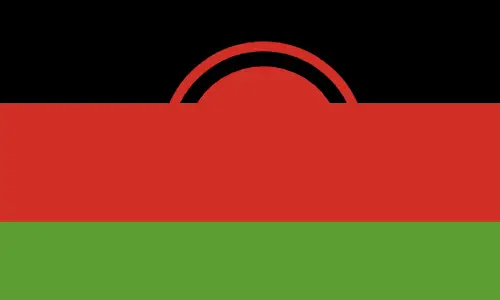

About Me
I'm Rex Jonathan. Born and raised in Malawi, I'm a passionate Software Engineer and skilled Computer Technician. I craft beautiful, functional software and provide top-notch technical support, ensuring seamless system performance. To me, it's all about harnessing the power of computers to drive innovation, solve complex problems, and create digital solutions that make a difference.
Lilongwe, Malawi
Malawi, known as the "Warm Heart of Africa," is a landlocked country in southeast Africa. It is famous for Lake Malawi, which covers about a third of the country and is home to more fish species than any other lake in the world. Malawi is also known for its friendly people, diverse wildlife, and stunning landscapes.